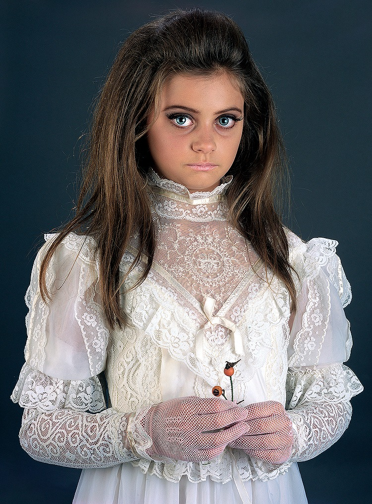
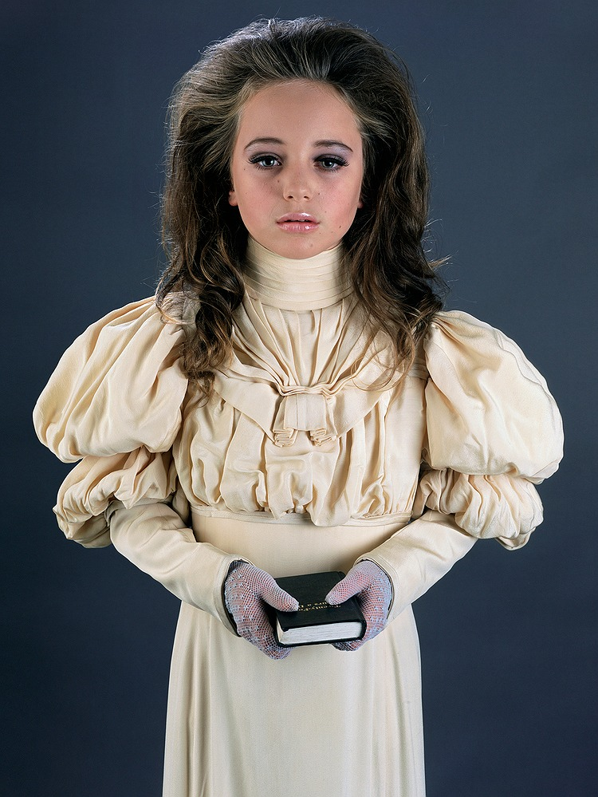

I have loved Yvonne Todd's photographic style for a long time. A lot of what she does with her work is the styling of models, choice of models with little/no experience in front of a camera, and the storytelling and narrative that supports the works. She is focused on side characters, on the women who find themselves on the periphery and are often forgotten or overlooked.
She is not interested in talent or heroism but purely these kind of naive, accidental moments of noteriety. She describes herself as being obsessed with Priscilla Presley, and this styling, combined with a kind of Victorian sensibility and perspective, are very evident in her camera.
click here to learn more


make space!